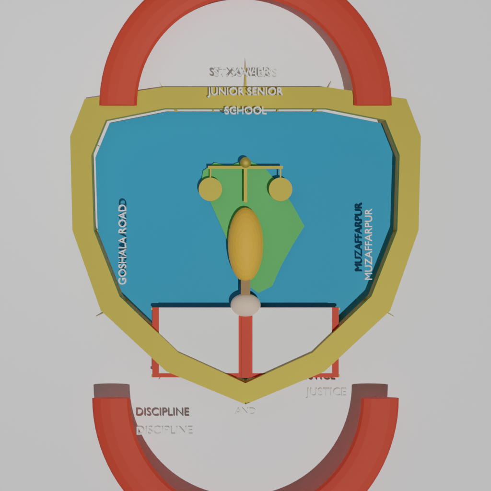

3D Crest Recreation — Blender & Blockbench
The original 2D crest image that was used as the reference for both 3D reconstructions.

Cycles render of the Blender model (1024×1024, 64 samples). High-detail bas-relief.
Top-down projection of the Blockbench voxel model (110 cubes, 880 vertices).
This page presents two independent 3D reconstructions of the St. Xavier's Junior Senior School crest, both built from the same reference image using different tools and techniques. Each model is fully interactive — drag to rotate, scroll to zoom, and use the controls below each model to toggle auto-rotation or reset the view.
The Blender model was built entirely with a Python script executed in headless Blender 3.6 LTS. The reference image was first analyzed pixel-by-pixel (k-means color clustering, connected-component segmentation, bounding-box extraction) to determine exact element positions, colors, and proportions. A VLM (vision language model) was then used to identify each element by name and verify text content. The script builds each element as a separate mesh — the gold shield frame as a bmesh-built annulus, the blue field as a filled polygon, the sunburst as 24 triangular rays, the India map as a 19-vertex polygon, the scales of justice as cubes and cylinders, the torch as a cube handle with UV-sphere flame, the open book as a cover with two pages and text lines, the banners as math-built half-tori, and all text as extruded Blender text objects. Rendered with Cycles CPU at 64 samples.
The Blockbench model uses a voxel/cube-based approach — the entire crest is approximated with 110 colored cubes arranged on a 64×64×16 grid. Each cube represents one element of the crest (shield frame, blue field, sunburst rays, India map clusters, scales, torch, flame, book pages, banners, text marks). The model was generated as a Blockbench-format JSON file (.bbmodel) and then converted to GLB using trimesh for universal web display. This approach is lighter (30 KB vs 1.1 MB) and easier to edit in the Blockbench web editor.
Both models contain the following elements, derived from the reference image:
Pros: Smooth curves, proper text rendering, realistic materials, high detail.
Cons: Larger file (1.1 MB), requires Blender to edit, longer build time.
Pros: Tiny file (30 KB), editable in browser, fast to iterate.
Cons: Blocky/voxel appearance, no real text (just colored marks), less detail.